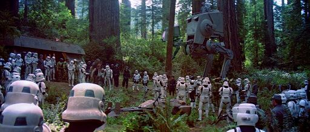

Planet
CORUSANT
CORUSANT
Coruscant is a vibrant city-planet and the political center of the galaxy. Its entire surface is covered by a sprawling metropolis that serves as the seat of the Galactic Republic and later the Galactic Empire. Coruscant is home to the Galactic Senate and the Jedi Temple, which is the main headquarters of the Jedi Order. Because of this, it is the heart of political decisions and intrigues shaping the fate of the entire galaxy.
The planet was the site of many important events and battles. The most famous was the Battle of Coruscant during the Clone Wars, when the Separatist forces led by General Grievous launched a surprise attack on the Republic’s capital. This battle had enormous strategic and political significance, ending with the dramatic kidnapping of Chancellor Palpatine, which accelerated the fall of the Republic and the rise of the Empire.
After the fall of the Republic, Coruscant remained the heart of the Empire, although the planet was repeatedly targeted by rebel attacks and assassination attempts. The city-planet is a symbol of both the power and downfall of galactic civilization, and its multi-layered architecture and massive population make it one of the most complex and fascinating places in the Star Wars universe.
Senat
Jedi Temple

Planet
DATHOMIR
DATHOMIR
Dathomir is a dark and mysterious planet in the Mid Rim, known for its dense forests, swamps, and a strong presence of the Force. It is home to the powerful women known as the Night Sisters, who wield magic and the dark side of the Force, alongside their allies, the Night Brothers — warriors who combine traditional combat skills with the planet’s mystical power. The most influential figure among them was the enigmatic Mother Talzin, a powerful witch and leader of the Night Sisters who played a key role in many galactic events.
Dathomir is also where legendary dark warriors like Darth Maul, his brother Savage Opress, and the bounty hunter Asajj Ventress — a former apprentice of Darth Tyranus — trained and operated. Their fates and battles were deeply intertwined with the magic and dark rituals of the planet. During the Clone Wars, General Grievous led a brutal purge on Dathomir, destroying many Night Sister settlements in an attempt to crush their influence.
Despite these tragedies, Dathomir remains a place shrouded in ancient secrets and powerful energy that continues to draw both Jedi and Sith. Its dense forests and ancient temples serve as a battleground between light and dark, where magic and war intertwine in a dangerous dance.
Nightbrother's Village

Nightbrother's Temple
Planet
EADU
EADU
Eadu is a harsh, mountainous planet located in the Outer Rim Territories, known for its hostile climate, frequent storms, and near-constant darkness caused by thick rainclouds. Its wild, rocky terrain and difficult weather conditions make it an ideal location for secrecy — which is why the Galactic Empire constructed a hidden research facility there.
Eadu was home to an Imperial research outpost where Galen Erso, the scientist behind the development of the Death Star superweapon, was forced to work. It was here that he oversaw key phases of the project under Imperial coercion. In Rogue One: A Star Wars Story, a Rebel strike team is sent to locate Galen on Eadu. The mission escalates when Rebel X-Wings bombard the facility, leading to Galen's death in the chaos.
Eadu is remembered as a grim site of betrayal, sorrow, and sacrifice — a place where the truth about the Death Star began to emerge, reigniting hope and resistance against the Empire.
Energy Conversion Laboratory
Bombing on Eadu

Planet
ENDOR
ENDOR
Endor is a forested planet located in the Endor system, best known for its dense woods and unique wildlife, including the legendary Ewoks — small, furry creatures living in harmony with nature. The planet has a relatively small population and has maintained a wild, untamed character, making it a challenging environment for large-scale battles and military operations.
Endor gained huge significance in galactic history during the Battle of Endor, a pivotal moment in the Second Galactic Civil War (also known as the War to Destroy the Death Star). In this battle, the Rebel Alliance fleet clashed with the Galactic Empire to destroy the second, completed Death Star. The Rebels’ victory led to the death of Emperor Palpatine and the Empire’s defeat, marking a major turning point for the entire galaxy.
Despite its apparent isolation, Endor became a symbol of resistance against tyranny and the place where the fate of the Empire was decided. The presence and bravery of the Ewoks played a crucial role in the victory, proving that even the smallest beings can have a massive impact on great events.
Imperial Base
Battle of Endor
Planet
FELUCIA
FELUCIA
Felucia is an exotic, humid planet located in the Quermian sector of the Outer Rim. Its surface is covered with dense, vibrant flora — giant mushrooms, fluorescent plants, and alien vegetation that give the world a surreal, dreamlike appearance. Due to its wet climate and wild nature, Felucia was difficult to conquer and even harder to hold, making it a strategic yet dangerous location during the Clone Wars.
Throughout the conflict, Felucia was the site of many battles between the Republic and the Separatists. Clone troopers and Jedi forces were stationed there, including Aayla Secura, who led the Republic troops on the planet. One of the most notable events on Felucia occurred when Order 66 was issued — the clones turned on their Jedi generals, and Aayla was betrayed and killed by her own troops amid the dense alien landscape.
During the reign of the Empire, Felucia remained only loosely controlled, as its wild terrain and pockets of rebel resistance made it a volatile and unpredictable world. In galactic history, Felucia is remembered as a place of stunning beauty, shadowed by war and treachery.
Order 66
Jungles on Felucia
Planet
GEONOSIS
GEONOSIS
Geonosis is a desert planet located in the Outer Rim, known for its barren landscapes, red dust, and vast rocky formations. While its surface appears harsh and unwelcoming, deep underground lie bustling cities and factories built by the Geonosians — an insectoid species that has inhabited the planet for millennia. Geonosis is also surrounded by a belt of asteroids, remnants of ancient cosmic collisions, which make the planet difficult to access.
Geonosis is most famous as the site of the Battle of Geonosis, the first large-scale conflict of the Clone Wars. Jedi arrived to rescue Obi-Wan Kenobi, Anakin Skywalker, and Padmé Amidala, sparking a fierce fight against the Separatist droid army and igniting a galaxy-wide war. The battle took place on open fields and inside the massive Petranaki Arena, where Jedi fought overwhelming enemy forces. Later in the war, the Second Battle of Geonosis saw clone forces led by Generals Skywalker, Kenobi, and Ahsoka Tano assault a droid factory, securing a crucial victory for the Republic.
After the Clone Wars, Geonosis became a critical site for the Galactic Empire, which commissioned the construction of the Death Star based on designs developed on the planet. To maintain secrecy, the Geonosian population was nearly exterminated by the Empire, leaving the planet largely abandoned. Today, Geonosis stands as a silent world, its history marked by battles, betrayal, and devastation — a forgotten cradle of one of the galaxy’s most fearsome weapons.
Droid Factory

Petranaki Arena
Planet
JEDHA
JEDHA
Jedha is an ancient desert planet located in the Terrabe sector, known as one of the earliest centers of Force worship in the galaxy. Covered in rocky wastelands, deep canyons, and ancient ruins, the planet holds immense religious significance — especially for followers of the Jedi Order. The city of NiJedha, once a spiritual capital, drew pilgrims from across the galaxy. It was home to sacred temples and relics devoted to the Force, making Jedha a revered and holy world.
During the reign of the Empire, Jedha was harshly occupied due to its rich deposits of kyber crystals, essential for powering the Death Star. The city of NiJedha was targeted and destroyed in a test blast from the superweapon, marking one of the first demonstrations of the Empire’s overwhelming power. The destruction of the city served as a chilling signal of the threat posed by the new regime.
Jedha became a symbol of lost culture, crushed faith, and the brutality of Imperial domination — but also a birthplace of resistance. It was on Jedha that Saw Gerrera and his Partisans waged guerrilla warfare against the Empire, representing a more radical wing of the Rebellion. Though devastated, Jedha’s legacy endured as a powerful emblem of spiritual strength and the unyielding fight against oppression.
Jedha City
Destruction of Jedha City
Planet
KAMINO
KAMINO
Kamino is a remote, ocean-covered planet located in the Outer Rim, known primarily for its vast oceans and lack of permanent landmass. The planet is famous for its advanced cloning technology, which played a crucial role during the Clone Wars. On Kamino lies the massive, futuristic city of Tipoca, where the Republic’s clone army was produced, based on the genetic template of Jango Fett.
The cloning process on Kamino was highly complex and advanced, allowing for rapid production of soldiers capable of serving in various combat conditions. Clones were trained, equipped, and prepared on-site to fight against the Separatist forces.
During the Clone Wars, the Separatists attempted to invade Kamino to steal the valuable genetic material necessary for producing the Republic’s clone army. Despite these attempts, the planet remained under Republic control, and the cloning operations continued, providing a critical advantage in the conflict.
Tipoca City
Cloning

Planet
MANDALORE
MANDALORE
Mandalore is a harsh, mountainous planet located in the Mandalore sector of the Outer Rim Territories. Its surface is dominated by rocky terrain, deserts, and sparse vegetation, making survival difficult and shaping the fierce nature of its people. Mandalore is the ancestral home of the Mandalorians — a proud and warrior-driven culture known for their advanced combat skills, strong sense of honor, and iconic armor made from beskar, a rare and nearly indestructible metal native to the planet. The challenging environment and constant conflict forged a society that values strength, resilience, and loyalty above all.
During the era of the Clone Wars, Mandalore experienced a period of political reform under Duchess Satine Kryze, who sought to steer her people away from violence and toward pacifism. From the domed capital city of Sundari, Satine led a neutral and peaceful government, facing resistance from traditionalists and militant groups like Death Watch, who believed Mandalore had strayed from its warrior roots. These internal divisions, combined with outside interference, eventually led to Satine’s downfall and the destabilization of her government — opening the door for darker forces to take control of the planet.
Mandalore’s darkest chapter came during the time of the Great Purge, when the Galactic Empire launched a devastating assault on the planet. Sundari and other cities were bombarded, and many Mandalorians were killed or forced to flee. The Empire's goal was to eliminate resistance and seize control of beskar resources, effectively wiping out much of Mandalorian culture and history. Despite the destruction, Mandalore remains a powerful symbol of identity and pride for its scattered people, who continue to preserve their traditions and dream of reclaiming their homeworld.
Sundari
After Bombardment

Planet
MUSTAFAR
MUSTAFAR
Mustafar is a fiery, lava-covered planet located in the Outer Rim sector, known for its extremely dangerous volcanic landscape dominated by rivers and lakes of molten lava. Its atmosphere is thick and suffocating, making it nearly uninhabitable for most life forms.
After the fall of the Republic and the end of the Clone Wars, Emperor Palpatine sent Anakin Skywalker—now transformed into Darth Vader—to Mustafar to eliminate the remaining Separatist leaders. On this volcanic planet, Vader brutally murdered all key Separatist commanders and politicians, marking the definitive end of the conflict and the full takeover by the Empire.
Mustafar is forever etched in galactic history as the site of the dramatic duel between Anakin Skywalker and his former master, Obi-Wan Kenobi. It was here, during this epic battle, that Anakin ultimately fell to the dark side of the Force, becoming Darth Vader. On the planet, Vader built his dark fortress, a symbol of his new identity and power, which became his place of retreat and planning for future actions.
Mustafar is not only a place of tragic events and dark secrets but also a symbol of transformation and rebirth in the Star Wars universe. Its harshness and destructive power reflect the brutality and determination of one of the saga’s most important characters.

Obi-Wan & Anakin Fight

Vader's Fortress

Planet
NABOO
NABOO
Naboo is a lush and picturesque planet located in the Mid Rim, renowned for its natural beauty, rich culture, and deep connection to the Force. The surface of Naboo is covered with rolling grasslands, dense forests, and sparkling lakes, while its core contains vast underwater oceans and cavern systems. The planet is home to two main civilizations: the human Naboo, who live in elegant cities like Theed, and the Gungans, an amphibious species residing in underwater settlements such as Otoh Gunga. Despite their differences, both societies contribute to the planet’s cultural and political richness.
Naboo holds significant political importance in the history of the Galactic Republic. It was the homeworld of Padmé Amidala, a queen and later senator known for her diplomacy and bravery, and of Sheev Palpatine, the senator who rose to become Supreme Chancellor — and ultimately Emperor. The planet became the center of galactic attention during the Invasion of Naboo, when the Trade Federation blockaded and attacked the world, prompting the involvement of the Jedi and sparking events that would lead to the rise of the Sith. Throughout this turmoil, Naboo remained a symbol of peace, unity, and the struggle for democracy.
Beyond politics, Naboo is known for its deep harmony with nature and its spiritual energy. Many Force-sensitive individuals describe the planet as a place of great balance in the Force. Its architecture reflects a blend of classical beauty and technological sophistication, with domed structures, waterfalls, and marble courtyards. Naboo’s cultural identity is rooted in art, philosophy, and environmental stewardship, making it a unique and beloved world among the Core and Mid Rim systems — a planet that, despite its small size, has left a lasting impact on galactic history.
Theed
Gungan City
Planet
SCARIF
SCARIF
Scarif is a tropical planet located on the fringes of the Outer Rim, known for its beautiful lagoons, palm-covered islands, and crystal-clear waters. However, beneath its idyllic appearance lies a vital part of the Galactic Empire’s war machine. Scarif served as a heavily guarded research and archive facility, storing the Empire’s most classified technological projects — including the plans for the Death Star.
A massive planetary shield surrounded the planet, with a single access point through an orbital gate. Within Scarif’s secure data vaults were blueprints of major weapons projects like “Celestial Power” and, most importantly, “Stardust” — the codename for the Death Star plans. This planet became the stage for one of the most crucial battles in the Galactic Civil War.
The Battle of Scarif was a turning point for the Rebel Alliance. A small strike team known as Rogue One infiltrated the Imperial facility and successfully transmitted the Death Star plans to the Rebel fleet, sacrificing their lives in the process. Though Scarif was destroyed by the Death Star shortly after, their mission paved the way for the Rebellion’s first major victory and gave hope to the galaxy oppressed by the Empire.
Shield Gate
Scarif Citadel
Shot from the Death Star

Planet
TATOOINE
TATOOINE
Tatooine is a dry, desert planet located in the Outer Rim, known for its twin suns, vast sands, and extreme living conditions. Despite this, it is home to various groups, from humans to Jawas and the dangerous Tusken Raiders. Tatooine is infamous as a hub for smugglers, slave traders, and criminals, making it a place full of intrigue and danger.
One of the most notorious locations on Tatooine is Mos Eisley, a bustling spaceport town known for its lawlessness and rough clientele. It serves as a key trading post and meeting place for smugglers, bounty hunters, and scoundrels from across the galaxy. The phrase "Mos Eisley spaceport — you will never find a more wretched hive of scum and villainy" perfectly captures its dark reputation.
On Tatooine stands the palace of Jabba the Hutt, a powerful and ruthless crime lord from the Hutt species. His dark, claustrophobic domain is filled with mercenaries, slaves, and bounty hunters who help him maintain control over slave trade, smuggling, and gambling. Jabba and his palace symbolize brutal power and fear that rule the planet’s underworld.
Though large galactic battles rarely take place on Tatooine, the planet played a key role in galactic history as the childhood home of Anakin and Luke Skywalker. Its harsh landscape and constant dangers make Tatooine a symbol of survival in tough conditions and a place where the fates of many important figures and events intertwine.

Mos Eisley

Jabba's Palace

Luke Skywalker's House
Planet
UTAPAU
UTAPAU
Utapau is a rocky, wind-swept planet located in the Tarabba sector of the Outer Rim. Its surface is marked by massive sinkholes, within which entire cities have been built. These vertical cities are inhabited by native species such as the Pau'ans and the Utai. Despite its harsh terrain, Utapau played a key strategic role during the Clone Wars.
The most notable event associated with the planet is the Battle of Utapau, where the Republic launched an assault on Separatist forces hiding within Pau City. The droid army, commanded by General Grievous, had taken refuge in the city’s sinkhole complex. Jedi Master Obi-Wan Kenobi was sent to confront him, leading the 212th Attack Battalion under Commander Cody.
Following intense combat between clone troopers and battle droids, Obi-Wan tracked down Grievous and engaged him in a fierce duel using both lightsabers and blasters. Kenobi ultimately defeated Grievous by shooting him with a blaster. However, shortly after the battle, Order 66 was issued, turning the clones against the Jedi. Obi-Wan narrowly escaped Utapau after surviving the betrayal. The battle marked one of the final major engagements of the Clone Wars and signaled the fall of the Republic and rise of the Galactic Empire.
Pau City
Battle of Utapau